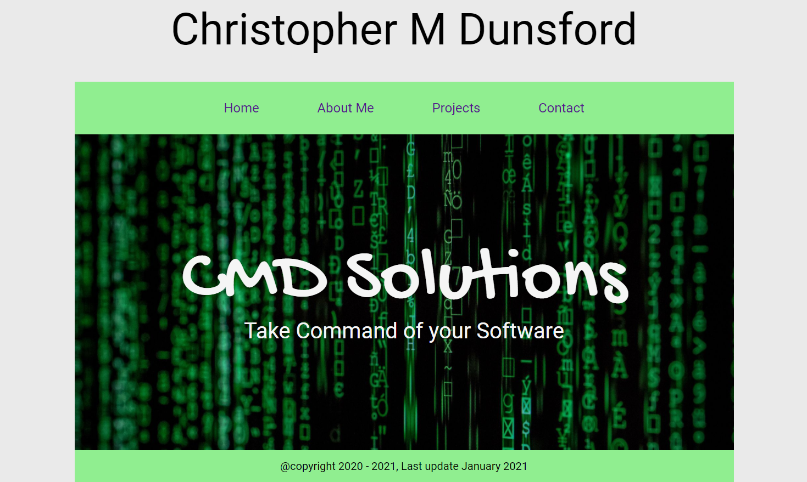
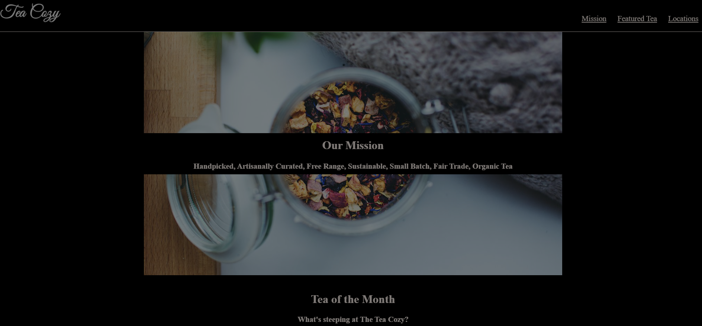
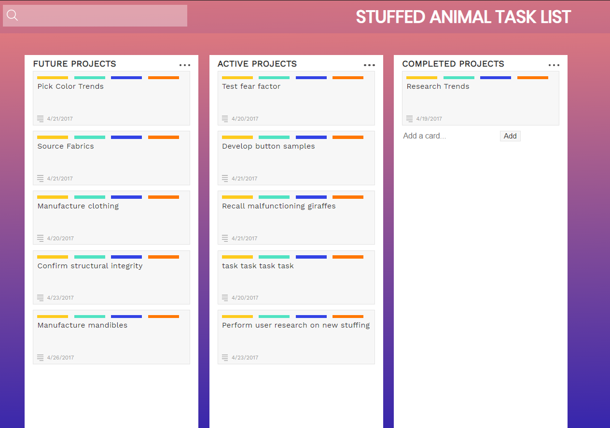

My Projects
I am unable to show my top projects as they are proprietary code owned by my former employer, OpenText. I am; however, able to show some small projects that I have been working on. I consider these small projects as playtime in order to sharpen my skillset in areas such as CSS Grids, CSS Flexbox, javascript, and more.
The Christopher Dunsford Portfolio Site
https://github.com/cdunsford/christopherdunsford You are currently visiting one of my latest projects. This site serves as my portfolio site to not only serve as a way for you to contact me but also is a way for me to showcase my skills. This site uses vanilla HTML, CSS, and Javascript. There is currently no framworks in use (such as Boootstrap). I use CSS grids for page layouts. I use CSS flexboxes for content layout. I call out with a social media Javascript link to link my LinkedIn page.
Tea Cozy
https://cdunsford.github.io/teacozy2/ Tea Cozy is a project that all CodeCademy (http://www.codecademy.com) students in the Web Development or Full Stack Development track must code. The main idea is to work with page layout using css Flexbox. I did so and I also incorporated responsive design patterns such as using media queries to make the site mobile friendly.
Stuffed Animal Task List
https://cdunsford.github.io/stuffedanimaltasklist/ This site is a simple one. I used it to work on the CSS grid technique. There is no functionality incorporated. The idea is from Code Cademy (http://www.codecademy.com)